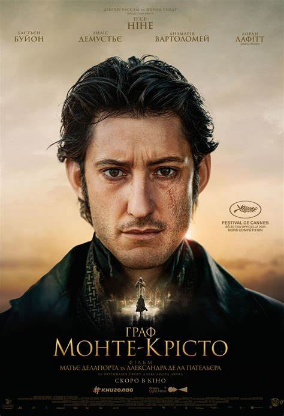

Артур Флек запроторений до лікарні Аркхем, де очікує на суд через злочини,
скоєні ним в образі Джокера. Розриваючись між двома особистостями, Артур
не лише пізнає справжнє кохання, а й також віднайде музику, яка завжди
грала всередині нього.

Фільм розповідає історію молодого чоловіка Едмона Дантеса, який стає
жертвою змови та затримується в день свого весілля за злочин, якого він не
вчиняв. Зраджений друзями і засуджений корумпованим суддею, моряка Дантес
засуджують до довічного ув’язнення на острові Шато-д’Іф. Після 14 років
неволі Едмон здійснює зухвалу втечу і життя повертається так, що він
повертається до Франції непристойно багатим під новим ім’ям та прагне
помститися тим, хто зруйнував його життя.